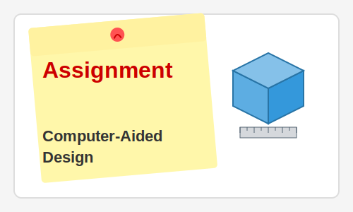

Week 7: Electronics Design
Week 7 focused on electronics design, building upon the electronics production skills from Week 5. This assignment involved designing custom circuit boards, which is a crucial skill for creating tailored electronic solutions for specific applications, particularly valuable for my work in solar R&D at Barefoot College.
Key Learning Outcomes
- Understanding the principles of circuit design and component selection
- Learning to use Eagle CAD/KiCad for schematic capture and PCB layout
- Designing circuits with microcontrollers (primarily ATtiny series)
- Implementing design for manufacturing (DFM) principles for PCB production
- Creating documentation for circuit designs
Equipment Used
- KiCad EDA software for circuit design
- Multimeter and oscilloscope for testing and debugging
- Various electronic components (ATtiny44A, resistors, capacitors, etc.)
- FTDI cable for programming and communication
Assignment Deliverables
For this assignment, I needed to:
- Design a microcontroller board with an input and output device
- Create schematics and PCB layouts for the design
- Document the design process, component selection, and design decisions
- Prepare the design for fabrication
My Project: Solar Charge Monitor
Drawing from my experience at Barefoot College, I designed a simple solar charge monitoring circuit based on an ATtiny44A microcontroller. The circuit includes:
- Voltage dividers to measure both solar panel and battery voltage
- LEDs to indicate charging status and battery level
- A small OLED display for showing detailed information
- A power management system for efficient operation
Design Considerations
Several key considerations influenced my design:
- Low power consumption: The circuit needed to draw minimal power to avoid draining the battery it monitors
- Durability: Components were selected for their reliability in varying environmental conditions
- Cost-effectiveness: Using readily available components to keep the design affordable
- Simplicity: Designing a circuit that could be easily understood and maintained by others
Challenges and Solutions
One significant challenge was designing the voltage measurement circuit to handle the wide range of voltages from solar panels (up to 20V in bright sunlight) while protecting the microcontroller's analog inputs (which can only handle up to 5V). I solved this by designing appropriate voltage dividers with protection components.
Another challenge was optimizing the PCB layout to minimize noise and interference, particularly important for accurate analog measurements. I implemented proper ground planes, kept analog and digital signals separated, and used appropriate component placement to address this issue.
Reflection
This electronics design exercise directly applies to my work at Barefoot College, where we develop solar solutions for rural areas. The skills gained in circuit design will enable me to create customized monitoring and control systems for our solar installations, potentially improving their efficiency and reliability.
I'm especially interested in continuing to develop this design into a full-fledged monitoring system that could be deployed in remote areas, providing valuable data on solar system performance while remaining cost-effective and durable.